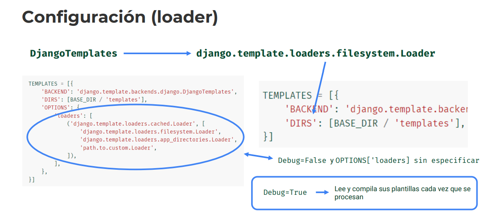
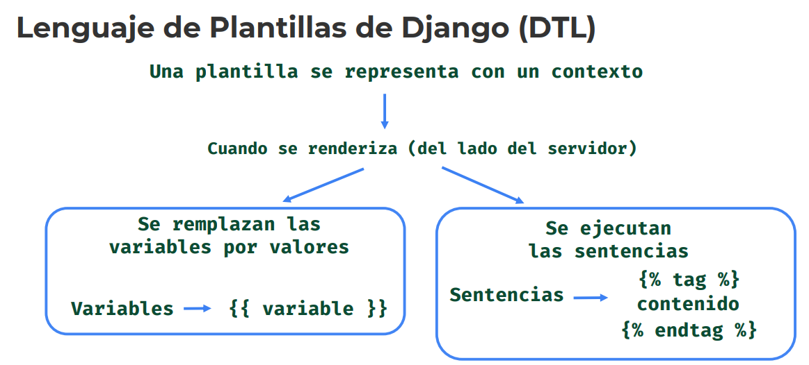
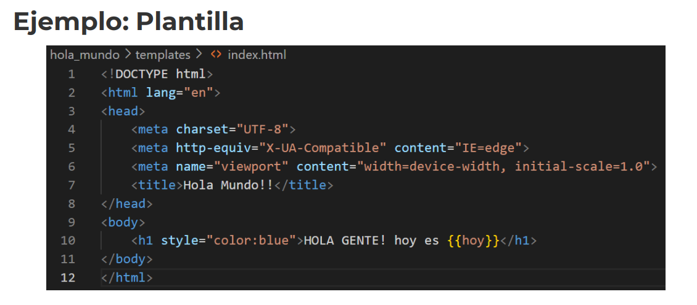
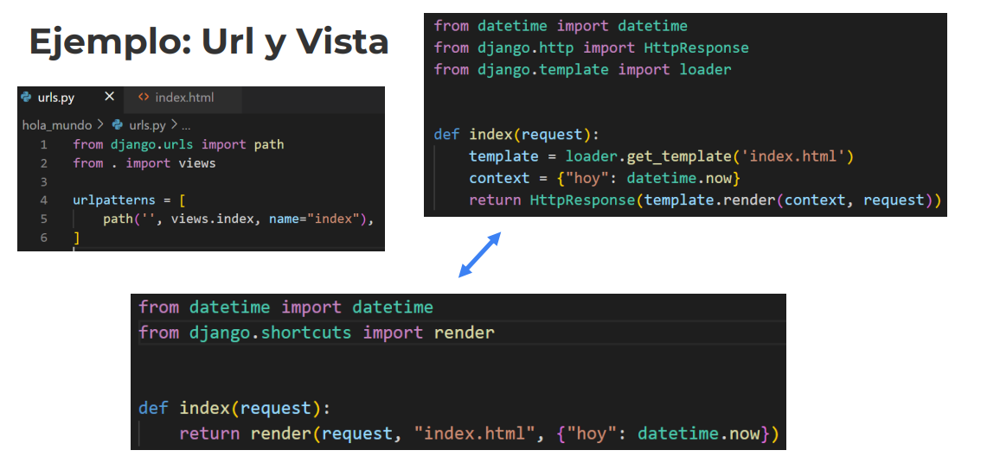

Desarrollo Django
1. Plantillas (templates)
- Templates:
- Template Backend
- Template Loader
- Configuración
- Integración con Vistas
- Contexto
- Variables
El template se enfoca en como tiene que mostrarse el documento..
- Genera HTML dinámicamente con una sintaxis especial.
- Se encarga de la presentación.
NO de la lógica de negocio
2. Motor de Plantillas (templates backend)
- Motor de Plantillas (Templates Backend)
- Motor Integrado -> django.template.backends
- django.DjangoTemplates -> Motor Integrado (Lo que veremos)
- jinja2.jinja2 -> También lo tiene
3. Configuración (backend)
----------------------- Al crear el proyecto.. Lo que genera por defecto.
TEMPLATES = [
{
'BACKEND': 'django.template.backends.django.DjangoTemplates',
'DIRS': [], -> Lista de Directorios en los que el motor debe buscar archivos fuente de plantillas. Directorios dentro del proyecto.
'APP_DIRS': True, -> Indica si el motor debe buscar plantillas dentro de las aplicaciones instaldas (en la carpeta templates).
'OPTIONS': {
'context_processors': [
'django.template.context_processors.debug',
'django.template.context_processors.request',
'django.contrib.auth.context_processors.auth',
'django.contrib.messages.context_processors.messages',
],
},
},
]
-> Dentro de Options, se pueden poner distintos loaders para la carga de templates..
DjangoTemplates -> django.template.loaders.filesystem.Loader Lo usa por defecto, se puede configurar.
4. Configuración (loader)

5. Lenguaje de Plantillas de Django (DTL)
----------------------- Lenguaje de Plantillas de Django (DTL)
Una plantilla se representa con un contexto.. El contexto son los datos que el template necesita.
El contexto es un diccionario, con su respectiva clave valor.
Cuando se renderiza (del lado del servidor)
2 maeneras: Por variables o ejecutar las sentencias.
-> Se reemplzan las variables por valores - Variables -> {{ variable }}
-> Se ejecutan las sentencias - Sentencias {% tag %}
contenido
{% endtag %}
Como buena práctica es recomendable guardar los templates.. En una carpeta llamada templates
----------------------- En nuestro settings del proyecto inicial
BASE_DIR = Path(__file__).resolve().parent.parent
TEMPLATES = [
{
'BACKEND': 'django.template.backends.django.DjangoTemplates',
'DIRS': [BASE_DIR / 'templates'], -> Especificamos la carpeta templates
'APP_DIRS': True,
'OPTIONS': {
'context_processors': [
'django.template.context_processors.debug',
'django.template.context_processors.request',
'django.contrib.auth.context_processors.auth',
'django.contrib.messages.context_processors.messages',
],
},
},
]
----------------------- Ahora dentro de nuestras app "hola_mundo", creamos nuestro index.html
Y desde nuestro views.py
from datetime import datetime
# from django.template import loader
# from django.http import HttpResponse
from django.shortcuts import render -> Nos traemos el shorcuts
# def index(request):
# template = loader.get_template('hola_mundo/index.html')
# context = {"hoy": datetime.now}
# return HttpResponse(template.render(context, request))
def index(request):
return render(request, "hola_mundo/index.html", {"hoy": datetime.now}) -> Esta es la forma más "resumida", handler shortcuts
----------------------- Recomendación
Los templates se deben manejar en una carpeta templates a base del proyecto..
Es decir en el proyecto general, evitando crear templates por aplicación..
- my_applicationGeneral
-> app_1
-> app_2
- templates -> dentro, todas las aplicaciones que tengamos.
-> app_1
-> app_2

6. Ejemplo: Plantilla

7. Ejemplo: Url y Vista
